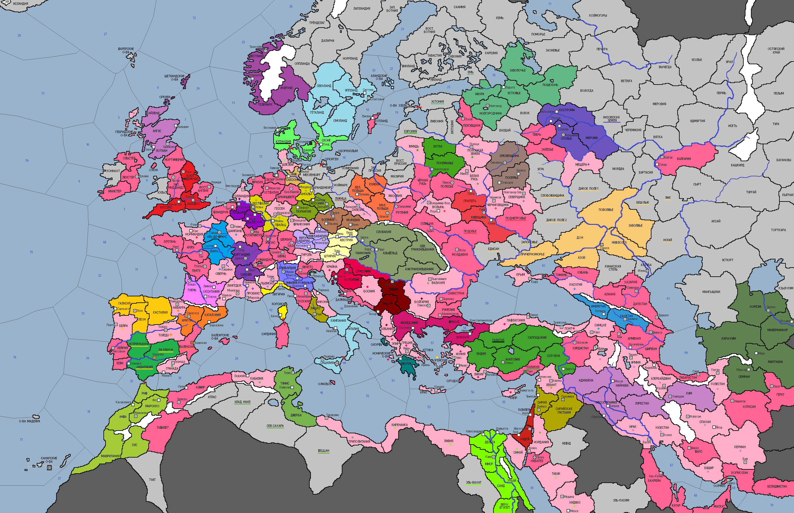

<== | 0 | | 1 | | 2 | | 3 | | 4 | | 5 | ==>

Формирование единого древнерусского этноса
В XII веке со страниц летописей исчезают упоминания об отдельных восточнославянских племенах, населявших огромную территорию от Карелии до Крыма. Всё чаще встречается термин 'русичи', 'Русь', как обобщенное название проживавших здесь народов. Появляются условия для политической централизации и формирования единого древнерусского этноса. [Страны Руси могут без штрафа сменить гос.этнос на 'русичи', этнос население столицы замещается автоматически. До конца игры действует +15% к шансу ассимиляции]
· Рабы поднимают восстание в Галатии.
· В Австрии – эпидемия лихорадки.
· В Дании продолжается мятеж религиозных фанатиков. Король Магнус I Добрый действует не решительно, оправдывая свое прозвище.
· Фатимиды присоединяют к своему государству вассальный эмират Этбай.
· Литовский князь Кернус завещает трон сыну Миндовгу. Военный поход нового князя приводит к захвату Куронии.
· Арагонцы проводят решительный штурм г.Валенсии и одерживают верх.
· Мстислав Великий продолжил установление контроля над соседними княжествами, начав в 1140 г. войну с Переяславлем. В сражении в Поднепровье киевское войско одерживает победу.
· Папа Иннокентий II издает буллу «Дарованное нам Богом» и празднует победу над «жалкой пародией себя» - Анаклетом II, которого не поддержал ни один христианский правитель.
· Король Кастилии Альфонсо VII лично ведет войска на штурм г.Кордовы и без труда захватывает её. Вторая армия христиан вторгается в Андалусию.
· Поздней ночью 2 марта 1140 г. король Шотландии Давид I Святой засиделся в библиотеке Эдинбурга за древним кельтским манускриптом. Неосторожное движение, столкнувшее свечу на пол, вылилось в пожар, спаливший библиотеку и ставший погребальным костром для самого монарха…
· Под ударами половцев к 1140 г. пали племена Слобожанщины, Ногая, Яика и Беш-лыка.
· По указу короля Англии Гильома I Молодого евреям запрещено селиться на туманном Альбионе.
· Всеволод Лукич – новый посадник Новгородской республики. Новгородские силы захватывают Эстонию.
· Владислав I утверждается на богемском троне и вступает в противоборство с духовенством.
· Власти Хорезма подавляют восстание рабов в Мавераннахре.
· После смерти Юрия Долгорукого власть во Владимирском княжестве перешла к его сыну – Андрею Боголюбскому. Уже новый князь захватывает соседнюю Низовскую землю.
· Валахия принимает покровительство Венгрии.
· Побродив по странам Европы, одна из диаспор евреев на свой страх и риск решила вернуться в Сарагосу. Население города встретила евреев погромами и стихийными народными возмущениями.
· Основаны новые города: Вестервиг (Дания)